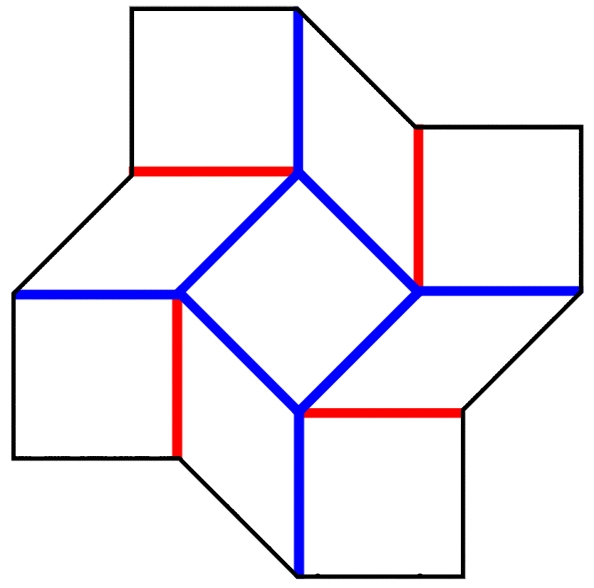

<!-- <script src="http://evanw.github.com/glfx.js/glfx.js"></script>
<script>
var canvas;
var texture;
var textureA;
var textureB;
function toggle() {
    texture = (texture == textureA) ? textureB : textureA;
    canvas.draw(texture).ink(1).update();
}
window.onload = function() {
    canvas = fx.canvas();
    document.body.appendChild(canvas);
    textureA = canvas.texture(document.getElementById('imageA'));
    textureB = canvas.texture(document.getElementById('imageB'));
    setInterval(toggle, 500);
};
</script>

 -->

<!-- <head>
  <meta charset="utf-8">
  <meta name="viewport" content="width=device-width, initial-scale=1, shrink-to-fit=no">

  <link rel="stylesheet" type="text/css" href="css/style.css" media="screen">
  <link rel="stylesheet" type="text/css" href="css/jquery/jquery-ui.css" media="screen">

  <link rel="stylesheet" href="https://stackpath.bootstrapcdn.com/bootstrap/4.1.3/css/bootstrap.min.css" integrity="sha384-MCw98/SFnGE8fJT3GXwEOngsV7Zt27NXFoaoApmYm81iuXoPkFOJwJ8ERdknLPMO" crossorigin="anonymous">
  <script src="https://code.jquery.com/jquery-3.3.1.slim.min.js" integrity="sha384-q8i/X+965DzO0rT7abK41JStQIAqVgRVzpbzo5smXKp4YfRvH+8abtTE1Pi6jizo" crossorigin="anonymous"></script>
  <script src="https://cdnjs.cloudflare.com/ajax/libs/popper.js/1.14.3/umd/popper.min.js" integrity="sha384-ZMP7rVo3mIykV+2+9J3UJ46jBk0WLaUAdn689aCwoqbBJiSnjAK/l8WvCWPIPm49" crossorigin="anonymous"></script>
  <script src="https://stackpath.bootstrapcdn.com/bootstrap/4.1.3/js/bootstrap.min.js" integrity="sha384-ChfqqxuZUCnJSK3+MXmPNIyE6ZbWh2IMqE241rYiqJxyMiZ6OW/JmZQ5stwEULTy" crossorigin="anonymous"></script>
  <script src="https://code.jquery.com/jquery-1.12.4.js"></script>
  <script src="https://code.jquery.com/ui/1.12.1/jquery-ui.js"></script>
  <script type="text/javascript" src="http://evanw.github.com/glfx.js/glfx.js"></script>
</head>

<div id="Image" class="tabcontent">
  <h3>Image</h3>
  <div id="input-image" class="displayedImage">
    </img>
  </div>
  <div class="slider-container">
    <label>Brightness</label>
    <div id="slider-brightness" style="background: #AEBBBF;"></div>
    <label>Contrast</label>
    <div id="slider-contrast" style="background: #AEBBBF;"></div>
  </div>
  <div class="toggle-container">
    <label>Black and White</label>
    <input id="blackAndWhite" type="checkbox" value=true><br>
  </div>
</div>

<script>

window.onload = function() {
    // try to create a WebGL canvas (will fail if WebGL isn't supported)
    try {
        var canvas = fx.canvas();
    } catch (e) {
        alert(e);
        return;
    }

    // convert the image to a texture
    var image = document.getElementById('image');
    var texture = canvas.texture(image);

    // apply the ink filter
    canvas.draw(texture).ink(1).update();

    // replace the image with the canvas
    image.parentNode.insertBefore(canvas, image);
    image.parentNode.removeChild(image);
};

function slider() {
  $( "#slider-brightness" ).slider({
    value: 50,
    animate:"fast",
    orientation: "horizontal",
    slide: function( event, ui ) {
      brightness = $( "#slider-brightness" ).slider( "value" ) / 100;
      canvas.draw(textureEdited).brightnessContrast(brightness,0).update();
    }
  });
}

</script> -->

<!-- <!DOCTYPE html>

<html lang="en">
  <head>
    <meta charset="utf-8">

<head>
    <title>Document</title>
    <script type="text/javascript" src="http://evanw.github.com/glfx.js/glfx.js"></script>
</script>
</head>

<body>
  
  
  <input id="upload" class="upload" type="file"/>
    <script>
        window.onload = function () {
            // try to create a WebGL canvas (will fail if WebGL isn't supported)
            try {
                var canvas = fx.canvas();
            } catch (e) {
                alert(e);
                return;
            }
            let image = document.getElementById('image');
            let image2 = document.getElementById('image2');
            let source = document.getElementById('upload');

            source.addEventListener('change', (e) => {
            image.src = URL.createObjectURL(e.target.files[0]);
            image2.src = URL.createObjectURL(e.target.files[0]);
            }, false);

            image.onload = function() {
            var texture = canvas.texture(image);
            var texture2 = canvas.texture(image2);

            texture.draw(image).ink(1).update();
          };

            // apply the ink filter

        };
    </script>
</body>
</html> -->
